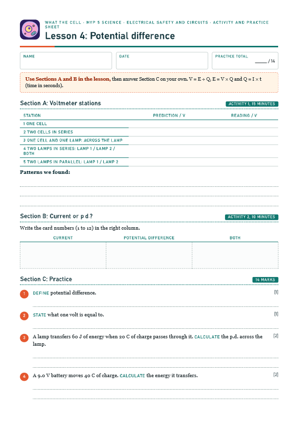

By the end of the lesson you can
- Define potential difference as energy transferred per coulomb
- Use V = E / Q, and E = V × Q
- Connect a voltmeter correctly, in parallel
- Distinguish between current and potential difference
Keys: arrows or a presentation clicker move the slides, F for full screen. Slides with a red dot have a video or simulation.
Videos (all 5 minutes or less)
- 3:18
Potential difference: what is voltage?
Science Sauce. Potential difference as energy per coulomb, with clear diagrams. Slide 5.
- 3:21
Current and potential difference
FuseSchool. What ammeters and voltmeters measure and how they are connected. Slide 9.
Simulations
- Lab
Circuit Practicals Lab: current and p.d.
What the Cell. Change the power pack setting and read the voltmeter across a resistor and a lamp.
- PhET
Circuit Construction Kit: DC
PhET, University of Colorado Boulder. Measure the p.d. across bulbs in series and in parallel with the voltmeter.
Print and practise

Activity and practice sheet
Used in the lesson’s activities, with practice questions. Your teacher has the answers.
Download (PDF)Lesson 4 slides
All 22 slides in one file, to read again or print. The video buttons on the slides open YouTube.
Download the slides (PDF)Revising? The Revision tab on the unit page has the unit notes and review.
Class activity pack
Everything to print for the lesson’s activities: picture cards, sorting mats, station cards with their kit lists, and the teacher’s set-up notes. Print it before class.
Download the activity pack (PDF)Notes: Potential difference
Energy per coulomb
A cell gives each coulomb of charge energy; components such as lamps transfer that energy to the surroundings. Potential difference (p.d.) is the energy transferred per coulomb between two points.
The volt
p.d. is measured in volts (V); 1 V = 1 joule per coulomb. V = E / Q, so E = V × Q. With Q = I × t, E = V × I × t.
The voltmeter
A voltmeter measures p.d. It is connected in parallel, across a component, because p.d. compares two points. It has a very high resistance, so almost no current flows through it.
Cells and batteries
Cells in series add their p.d.s: three 1.5 V cells give 4.5 V. A bigger cell lasts longer but has the same p.d. A 9 V battery has six small cells inside.
Current and p.d. compared
Current is how fast charge flows (amperes, ammeter in series, the same all round a loop). p.d. is energy per coulomb (volts, voltmeter in parallel, shared between components in series).
Why 220 V is dangerous
A higher p.d. gives each coulomb more energy and drives a bigger current through anything in its path, including a person. Mains in Vietnam is 220 V.
Key words
| potential difference (V) | energy transferred per coulomb between two points |
|---|---|
| volt (V) | 1 joule per coulomb |
| V = E / Q | p.d. (V) = energy (J) / charge (C) |
| voltmeter | a meter that measures p.d.; connected in parallel |
| in parallel | connected across a component, side by side |
| e.m.f. | the p.d. a cell gives each coulomb |
| battery | two or more cells joined together |